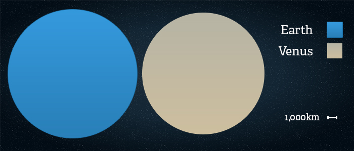
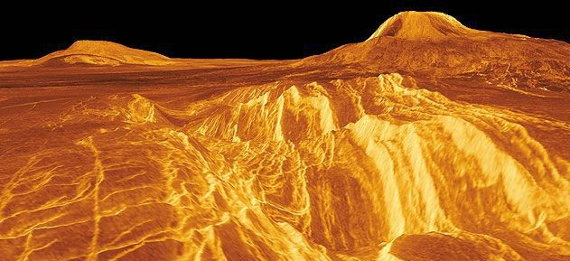

Venus is the second planet from the Sun and our closest planetary neighbor.
Similar in structure and size to Earth, Venus spins slowly in the opposite direction from most planets. Its thick atmosphere
traps heat in a runaway greenhouse effect, making it the hottest planet in our solar system with surface temperatures hot
enough to melt lead. Glimpses below the clouds reveal volcanoes and deformed mountains. Venus is named for the ancient Roman
goddess of love and beauty, who was known as Aphrodite to the Ancient Greeks.
Structure
Venus is in many ways similar to Earth in its structure. It has an iron core that is
approximately 3,200 kilometers in radius. Above that is a mantle made of hot rock slowly churning due to the
planet's interior heat. The surface is a thin crust of rock that bulges and moves as Venus' mantle shifts and creates volcanoes.
Size
With a radius of 6,052 kilometers, Venus is roughly the same size as Earth — just slightly smaller.
From an average distance of 108 million kilometers, Venus is 0.7 astronomical units away from the Sun. One astronomical unit
(abbreviated as AU), is the distance from the Sun to Earth. It takes sunlight 6 minutes to travel from the Sun to Venus.


Surface
From space, Venus is bright white because it is covered with clouds that reflect and scatter
sunlight. At the surface, the rocks are different shades of grey, like rocks on Earth, but the thick atmosphere filters the
sunlight so that everything would look orange if you were standing on Venus. Venus has mountains, valleys, and tens of thousands
of volcanoes. The highest mountain on Venus, Maxwell Montes, is 8.8 kilometers, similar to the highest mountain on Earth, Mount Everest.
The landscape is dusty, and surface temperatures reach a scalding 471 degrees Celsius.